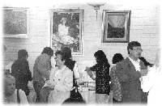

| Panorama d'événements |
 Des personnes de différents milieux culturels, tout d'abord en Finlande puis en Russie aussi, puis dans les pays baltiques, la Suède, le Danemark et la Norvège, en plus des journalistes de la presse écrite et la radio ont visité le stand Guan Yin.